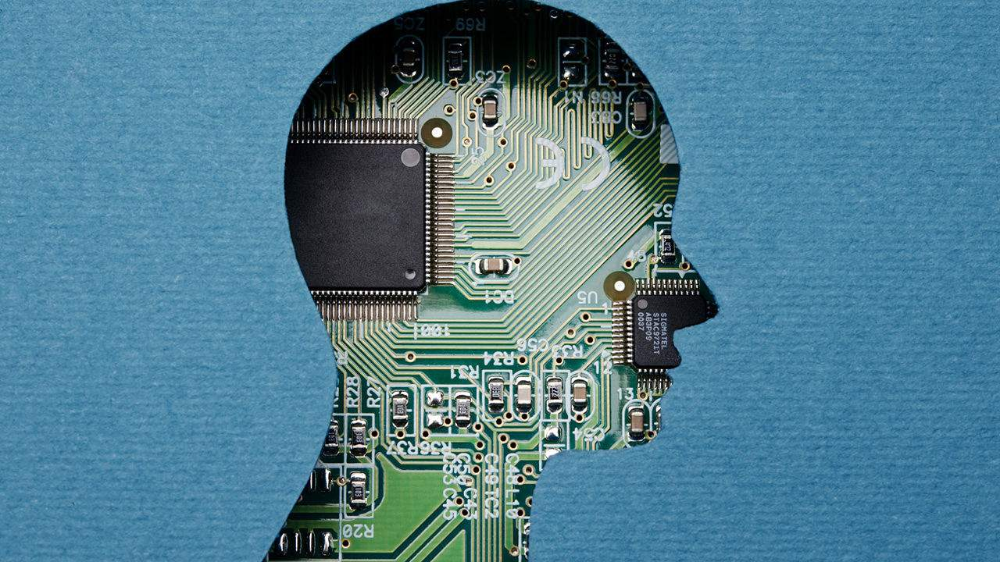
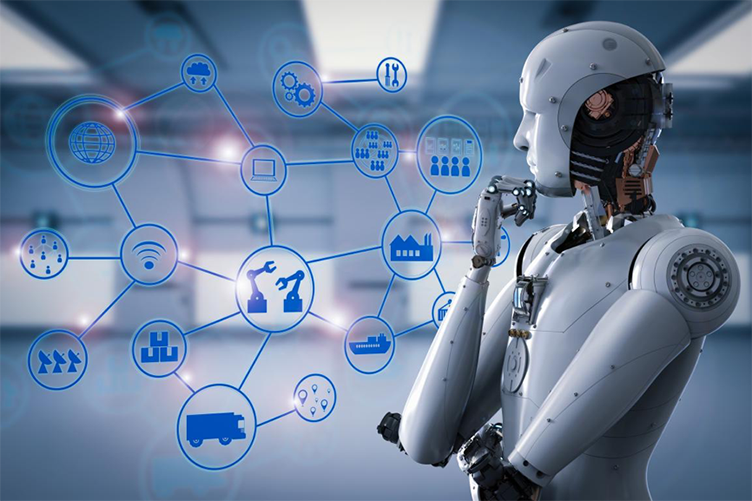

人工智能（Artificial Intelligence），英文缩写为AI。它是研究、开发用于模拟、延伸和扩展人的智能的理论、方法、技术及应用系统的一门新的技术科学。人工智能是计算机科学的一个分支，它企图了解智能的实质，并生产出一种新的能以人类智能相似的方式做出反应的智能机器，该领域的研究包括机器人、语言识别、图像识别、自然语言处理和专家系统等。人工智能从诞生以来，理论和技术日益成熟，应用领域也不断扩大，可以设想，未来人工智能带来的科技产品，将会是人类智慧的“容器”。人工智能可以对人的意识、思维的信息过程的模拟。人工智能不是人的智能，但能像人那样思考、也可能超过人的智能。人工智能是一门极富挑战性的科学，从事这项工作的人必须懂得计算机知识，心理学和哲学。人工智能是包括十分广泛的科学，它由不同的领域组成，如机器学习，计算机视觉等等，总的说来，人工智能研究的一个主要目标是使机器能够胜任一些通常需要人类智能才能完成的复杂工作。但不 同的时代、不同的人对这种“复杂工作”的理解是不同的。2017年12月，人工智能入选“2017年度中国媒体十大流行语”。
人工智能是研究使计算机来模拟人的某些思维过程和智能行为（如学习、推理、思考、规划等）的学科，主要包括计算机实现智能的原理、制造类似于人脑智能的计算机，使计算机能实现更高层次的应用。人工智能将涉及到计算机科学、心理学、哲学和语言学等学科。可以说几乎是自然科学和社会科学的所有学科，其范围已远远超出了计算机科学的范畴，人工智能与思维科学的关系是实践和理论的关系，人工智能是处于思维科学的技术应用层次，是它的一个应用分支。从思维观点看，人工智能不仅限于逻辑思维，要考虑形象思维、灵感思维才能促进人工智能的突破性的发展，数学常被认为是多种学科的基础科学，数学也进入语言、思维领域，人工智能学科也必须借用数学工具，数学不仅在标准逻辑、模糊数学等范围发挥作用，数学进入人工智能学科，它们将互相促进而更快地发展。
人工智能就其本质而言，是对人的思维的信息过程的模拟。对于人的思维模拟可以从两条道路进行，一是结构模拟，仿照人脑的结构机制，制造出“类人脑”的机器；二是功能模拟，暂时撇开人脑的内部结构，而从其功能过程进行模拟。现代电子计算机的产生便是对人脑思维功能的模拟，是对人脑思维的信息过程的模拟。弱人工智能如今不断地迅猛发展，尤其是2008年经济危机后，美日欧希望借机器人等实现再工业化，工业机器人以比以往任何时候更快的速度发展，更加带动了弱人工智能和相关领域产业的不断突破，很多必须用人来做的工作如今已经能用机器人实现。而强人工智能则暂时处于瓶颈，还需要科学家们和人类的努力。